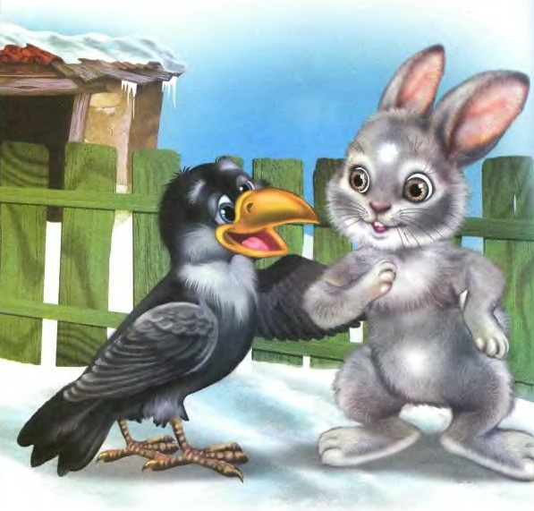

Жил заяц в лесу: радовался лету, а как пришла зима — загрустил.
Нелегко малышу найти пропитание — приходится незаметно по погребам людей лазить, то зёрен, то морковки какой найти. Так и жил заяц день ото дня.
Раз пролез он в один из погребов — глядь, а там уже целая заячья семья сидит, наспех обедает. Тут-то нашего зайца и понесло. Стал он хвастать:
— Мои усы – не усы, а усищи, мои лапы – не лапы, а лапищи, а уж зубищи какие… Никого в лесу я не боюсь!
Зайцы послушали, поусмехались меж собой и рассказали всё вороне. Ворона в лесу всем новости разносила, да судила всех и рядила.
Не долго ворона зайца искала, он, как и всегда под кустом прятался. Нашла и говорит:
— Зачем заяц хвастаешь?
Заяц испугался:
— Тётушка ворона, а я больше не буду хвастать!
— А как ты хвастал?
— Мои усы – не усы, а усищи, мои лапы – не лапы, а лапищи, а уж зубищи какие… Никого в лесу я не боюсь!
Сказал свою хвасту заяц вороне и замер от страха. Покачала головой ворона, потрепала зайца и сказала:
— Больше не хвастай!
Прошло с той истории время и раз видит заяц, что ворону собаки схватили и давай мять.
Побежал тогда к ним заяц и сел прямо перед носом у собак.
Те его как увидели, ворону разом бросили и пустились в охоту на зайца.
Ворона на забор взлетела. А заяц легко от собак ушёл, такой он прыткий оказался.
Встретила опять ворона зайца и говорит ему:
— Теперь ты заяц никакой не хваста, а настоящий храбрец!